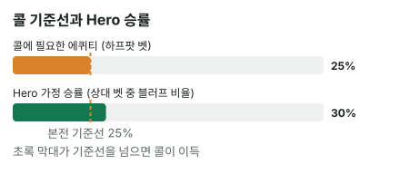

안녕하세요. 오늘은 B06에서 배운 팟오즈를 실제 핸드에 처음 써 보는 날이에요.
리버에 상대가 벳을 했어요. Hero 핸드는 페어이긴 한데, 이기는지 지는지 애매해요. 이럴 때 "느낌상 콜"이나 "왠지 질 것 같아서 폴드" 말고, 이유를 대고 정하는 방법이 있어요. 오늘 그걸 처음부터 끝까지 따라가 볼게요.
이 글에서 배울 것
- 상대 벳 크기만 보고 콜에 필요한 승률을 직접 구하는 법, 그리고 그 공식이 왜 그렇게 생겼는지
- 상대가 들고 있을 핸드를 센 핸드(밸류)와 블러프 두 묶음으로 나눠 보는 법
- 애매한 페어의 리버 콜이 사실은 "상대가 블러프를 얼마나 섞느냐"에 거는 결정인 이유
오늘의 핸드
Hero (BTN 자리 · 스택 100BB)


프리플랍
Hero 2.5BB 오픈 → SB 폴드 → 상대(BB) 콜
팟 5.5BB
플랍 · 팟 5.5BB


상대 체크 → Hero 2.75BB 벳(하프팟 = 팟의 절반 크기 벳) → 상대 콜
Hero는 포켓페어(보드 중간): J보다 낮고 7·4보다는 높은 8 페어예요. J가 들어간 페어를 가진 상대에게는 져요.
턴 · 팟 11BB


상대 체크 → Hero 체크
9가 나왔어요. 이제 9가 들어간 페어에도 져요.
리버 · 팟 11BB


상대 5.5BB 벳(하프팟) → Hero는 콜? 폴드?
결론부터 말할게요. 오늘 가정에서는 콜이 이득입니다. 콜할 때마다 평균 1.1BB씩 벌어요.
왜 그런지 4단계로 천천히 볼게요. 하나씩 이해하고 넘어가면, 다음부터는 같은 상황에서 10초 안에 판단할 수 있어요.
1단계. 콜하려면 몇 번 이겨야 하나 (필요 에퀴티)
먼저 용어 하나
에퀴티 = 이 팟에서 이길 확률이에요(정확한 뜻은 중급 I05에서 더 다듬어요).
필요 에퀴티는 "콜해서 본전이 되려면 최소한 이 정도는 이겨야 한다"는 확률이에요. 이것보다 자주 이기면 콜이 남고, 덜 이기면 콜이 손해예요.
복권으로 생각해 보기
콜은 복권을 사는 것과 같아요.
- 복권값: Hero가 내는 콜 5.5BB
- 당첨금: 원래 팟 11BB와 상대 벳 5.5BB를 합친 16.5BB (Hero가 순수하게 버는 돈)
"원래 팟 11BB에는 Hero가 앞에서 낸 돈도 있는데 왜 버는 돈이에요?" 하실 수 있어요. 이미 팟에 들어간 돈은 누가 냈든 이제 팟의 돈이에요. 지금 결정에서 따질 건 이번에 더 낼 5.5BB와 그걸로 가져올 수 있는 돈뿐이에요.
복권값에 비해 당첨금이 크면, 가끔만 당첨돼도 남겠죠. 그럼 "가끔"이 정확히 얼마일까요?
4번 사 보면 보여요
이 복권을 4번 산다고 해 볼게요. 그중 1번만 당첨된다면요.
- 당첨 1번: 16.5BB를 벌어요
- 꽝 3번: 한 번에 5.5BB씩, 5.5 × 3 = 16.5BB를 잃어요
번 돈과 잃은 돈이 똑같아요. 딱 본전이죠. 그래서 이 콜의 필요 에퀴티는 4번 중 1번, 25%예요.
공식은 이걸 한 줄로 줄인 것
B06에서 배운 공식이 바로 이 계산을 줄인 거예요. 우리가 낼 돈 ÷ 콜한 뒤 전체 팟.
필요 에퀴티 = 5.5(Hero 콜) ÷ (11(원래 팟) + 5.5(상대 벳) + 5.5(Hero 콜)) = 5.5 ÷ 22 = 25%
왜 "콜한 뒤 전체 팟"으로 나눌까요? 위의 4번을 다르게 세어 보면 보여요. 4번 콜하면 Hero는 5.5BB씩 4번 내요. 그리고 1번 이기면 콜한 뒤 팟 22BB를 통째로 돌려받아요. 낸 돈 5.5 × 4 = 22와 받은 돈 22가 같아지는 게 4번 중 1번이라서, 필요 에퀴티가 5.5 ÷ 22인 거예요.
앞에서 "16.5BB를 벌고 16.5BB를 잃는다"고 센 것과 같은 이야기예요. 이긴 판에서 돌려받는 22BB 안에 그 판에 Hero가 낸 5.5BB가 들어 있을 뿐이에요.
같은 걸 "몇 대 1"로도 말해요
포커에서는 이걸 팟오즈라고 해서 "몇 대 1"로도 말해요. 당첨금 16.5BB 대 복권값 5.5BB는 16.5 ÷ 5.5 = 3, 즉 3 대 1이에요.
3 대 1이면 "3번 지고 1번 이겨도 본전"이라는 뜻이에요. 그래서 3 + 1 = 4번 중 1번, 25%가 되는 거죠. %로 말하든 "몇 대 1"로 말하든 같은 이야기예요.
하프팟이면 언제나 25%
여기서 한 가지 더. 이 25%는 팟이 얼마든 하프팟 벳이면 똑같아요.
팟을 1이라고 놓아 볼게요. 하프팟 벳은 0.5, Hero 콜도 0.5, 콜한 뒤 팟은 1 + 0.5 + 0.5 = 2예요. 그러면 0.5 ÷ 2 = 0.25, 똑같이 25%죠.
그래서 실전에서는 계산기를 꺼낼 필요가 없어요. "하프팟이네? 4번 중 1번" 하고 바로 떠오르면 돼요.
2단계. 오늘의 가정 — Hero가 이길 확률
필요 에퀴티는 구했어요. 이제 반대쪽, Hero가 실제로 몇 번 이기는지를 봐야 해요.
상대가 벳하는 이유는 둘 중 하나
리버에 상대가 벳했다면, 오늘 가정에서는 이유가 둘 중 하나예요.
① 센 핸드로 돈을 더 받으려는 벳. 88을 이기는 핸드로 "콜해 주면 좋겠다" 하고 거는 거예요. 보드 J♣ 7♥ 4♠ 9♦ 2♣에서 88을 이기는 핸드를 빠짐없이 세면 이래요.
- J나 9가 들어간 페어(예: A♠J♦, K♥9♣)
- 88보다 높은 포켓페어 TT·QQ·KK·AA
- 보드 숫자와 같은 포켓페어로 만든 셋: JJ·99·77·44·22
- 보드 카드 두 장과 짝이 맞은 투페어(예: J9, 74, 72, 42)
- 7-8-9-T-J 스트레이트를 만드는 T8
② 못 맞춘 핸드로 상대를 접게 하려는 벳. 이걸 블러프라고 해요. 이 보드에서는 스트레이트를 노리던 핸드가 대표적이에요. 이렇게 한 장만 더 오면 완성되는 미완성 핸드를 드로우라고 해요. 예를 들어 Q♠T♥는 턴 9로 9-T-J-Q가 되어 8이나 K만 오면 스트레이트였고, 6♥5♥는 플랍부터 4-5-6-7이라 3이나 8을 기다렸어요. 그런데 리버 2는 둘 다 못 맞췄죠. 이 밖에도 턴 9로 9-J-Q-K가 되어 T만 기다리던 K♠Q♦, 아무것도 안 맞은 A♥K♦ 같은 높은 카드도 블러프 후보예요. 이런 핸드는 쇼다운까지 가면 88에게 지니까, 이기려면 벳으로 Hero를 접게 하는 수밖에 없어요.
(턴까지 보드 무늬가 다 달라서 플러시 드로우는 없는 보드예요.)
30%라는 가정
상대 손을 볼 수는 없으니, 오늘은 "이 상대가 이렇게 벳할 때 Hero가 이길 확률은 30%", 즉 10번 중 3번이라고 가정할게요.
이 30%를 위의 두 묶음으로 바꿔 말하면 이래요. 상대가 이 리버에 10번 벳하면, 7번은 ① 센 핸드, 3번은 ② 블러프라는 뜻이에요. Hero는 ①에는 다 지고 ②에는 다 이기니까요. 비기는 핸드나 Hero보다 약한 핸드로 하는 얇은 벳은 이 틀에서 빼고 단순하게 본 거예요.
어림할 때 보는 단서
"블러프가 몇 번쯤일까"는 정답이 정해진 숫자가 아니라 어림이에요. 그래도 오늘 핸드 안에 단서가 있어요.
- 빗나간 드로우가 실제로 있는 보드예요. 턴 9로 생긴 스트레이트 드로우들이 리버 2로 다 빗나갔어요. 블러프할 핸드가 상대 손에 있을 수 있다는 뜻이에요
- Hero가 턴에 체크했어요. 상대 눈에는 Hero가 약해 보일 수 있고, 그러면 리버 벳으로 접게 할 수 있다고 생각할 수 있어요
상대가 실제로 어떤 핸드를 몇 가지 들고 있는지 하나하나 세는 방법은 중급 I27에서 배워요. 지금은 이런 단서로 "상대 벳 10번 중 블러프가 몇 번쯤일까"를 어림하는 연습이면 충분해요.
3단계. 나란히 놓고 비교하기
이제 두 숫자를 나란히 놓아요. B14에서 연습한 그 비교예요.
| 확률 | |
|---|---|
| 콜에 필요한 에퀴티 | 25% |
| Hero 가정 승률 | 30% |

30% > 25%. 필요한 것보다 더 자주 이기니까 콜이에요.
핸드가 페어인지, 상대가 무서워 보이는지는 이 두 숫자 안에 이미 들어가 있어요.
4단계. 돈으로 바꿔 보기 — 10번 콜하면?
"필요한 것보다 조금 더 이긴다"가 실제로 얼마인지 돈으로 바꿔 볼게요. 같은 상황에서 10번 콜한다고 해요.
- 3번 이김: 한 번에 16.5BB씩(원래 팟 + 상대 벳) → 49.5BB 벌어요
- 7번 짐: 한 번에 Hero 콜 5.5BB씩 → 38.5BB 잃어요
- 합계: 49.5 − 38.5 = +11BB → 한 번에 평균 +1.1BB
식으로 쓰면 이렇게 돼요.
콜 평균 손익 = 0.3 × 16.5 − 0.7 × 5.5 = 4.95 − 3.85 = +1.1BB
식의 앞쪽 4.95는 "이길 때 버는 돈 × 이길 확률", 뒤쪽 3.85는 "질 때 잃는 돈 × 질 확률"이에요. 앞쪽이 크면 콜이 남아요. 이렇게 평균 손익을 구하는 방법은 B24에서 EV(기대값)라는 이름으로 다시 배워요.
폴드하면 이 팟에 더 넣지도 받지도 않으니 손익이 0BB예요. 그래서 콜이 폴드보다 한 번에 1.1BB 이득이에요.
왜 그럴까: 88은 "얼마나 센가"가 아니라 "누구를 이기나"로 봐요
계산은 끝났어요. 이제 한 걸음 더 들어가서, 이 계산이 왜 맞는지 볼게요.
88이 하는 일은 딱 하나
리버까지 다 나왔으니 Hero 핸드는 더 좋아지지도 나빠지지도 않아요. 결과는 상대가 무엇을 들었느냐로만 정해져요.
- 상대가 ① 센 핸드면: 88은 무조건 져요. 이때 콜은 5.5BB를 그냥 내는 거예요
- 상대가 ② 블러프면: 88은 무조건 이겨요. 이때 콜은 16.5BB를 가져와요
그러니까 이 판에서 88이 하는 일은 딱 하나, 상대 블러프를 잡는 일이에요.
그래서 "몇 번째로 센 페어인가"는 상관없어요
반대로 7 페어(예: A7)나 66·55 같은 작은 포켓페어에는 88이 이겨요. 그런데 오늘 가정에서 상대는 ① 아니면 ②로만 벳해요. 88이 이기는 작은 페어로 리버에 벳하는 경우는 가정에 넣지 않았어요. (실제로 상대가 A7 같은 작은 페어로도 벳한다면 88은 그 핸드도 이기니 승률이 올라가요. 그럴 때는 페어 순위가 조금 의미가 생겨요.)
그러면 88이 페어 중에서 강한 편이든 약한 편이든, 이기는 상대(②)와 지는 상대(①)는 똑같아요. 결정에 상관이 없는 거죠. 이렇게 상대 블러프만 이기는 핸드를 상급에서는 블러프캐처라고 부르는데, A04에서 자세히 다뤄요.
결국 블러프 비율에 거는 결정
이제 1단계와 2단계가 한 문장으로 이어져요.
- 필요 에퀴티 25% = "상대 벳 4번 중 1번만 블러프여도 본전"
- 가정 승률 30% = "상대 벳 10번 중 3번이 블러프"
그러니까 이 콜은 "상대가 이 벳에 블러프를 25%보다 많이 섞느냐"에 거는 결정이에요. 많이 섞는 상대면 콜, 거의 안 섞는 상대면 폴드예요.
기준선 25%는 핸드가 아니라 벳 크기에서 나와요
그럼 그 25%는 누가 정할까요? 88이 아니라 상대가 건 금액이에요. 1단계에서 본 것처럼 하프팟이면 언제나 25%였죠.
정리하면 리버 콜에는 숫자가 두 개 있고, 정하는 사람이 달라요.
- 필요 에퀴티: 상대의 벳 크기가 정해요
- Hero 승률: 상대의 블러프 비율이 정해요
자주 하는 실수
실수 1. "페어니까 콜" 핸드 이름으로 정하는 습관이에요. 88은 페어지만 이 보드에서는 ① 센 핸드 묶음에 모두 져요. 오늘 가정에서 88이 이기는 건 블러프인 10번 중 3번뿐이고, 나머지 7번은 져요. 페어라서 이기는 게 아니라 블러프가 섞여 있어서 이기는 거예요. 대신 "이 벳에 블러프가 몇 번쯤 섞였을까"를 먼저 물어요.
실수 2. 벳 크기를 안 보고 같은 기준으로 콜 "88이면 지난번에 하프팟에 콜했으니까 이번에도 콜" 하는 식이에요. 오늘 25%는 5.5BB를 걸고 16.5BB를 노려서 나온 값이라, 벳이 바뀌면 그대로 쓸 수 없어요. 벳이 커지면 필요 에퀴티도 올라가요. 상대가 벳하면 핸드를 보기 전에 "얼마를 걸었지?"부터 확인해요.
실수 3. 한 번 지고 나서 "콜하면 안 됐네" 오늘 가정에서 이 콜은 10번 중 7번은 지는 콜이에요. 그러니 오늘 졌다고 잘못된 결정은 아니에요. 결과 하나가 아니라 콜할 때 계산이 맞았는지로 평가해요. 결과가 아니라 결정을 평가하는 법은 A27에서 다뤄요.
"콜 말고 레이즈하면 더 벌지 않아요?"
좋은 질문이에요. 콜이 이득이면 더 크게 가고 싶죠.
그런데 상대 손을 두 묶음으로 나눠 보면 답이 보여요. Hero가 레이즈하면 ② 블러프는 그냥 폴드해요. 어차피 쇼다운에서 못 이기니까요. 반대로 ① 센 핸드는 콜하거나 다시 레이즈해요.
결국 레이즈는 88이 이기는 상대를 쫓아내고, 지는 상대에게만 돈을 더 넣는 셈이에요. 블러프만 이기는 핸드는 콜로 블러프를 잡는 게 제일 많이 버는 방법이에요.
숫자가 뒤집히는 지점
기준은 두 가지예요.
- 상대 벳 크기가 바뀌면: 필요 에퀴티가 다시 계산돼요. 그 값이 Hero 승률(30%)보다 높아지면 폴드, 낮으면 콜
- Hero 승률이 바뀌면: 지금 필요 에퀴티(25%)보다 높은지 낮은지만 보면 돼요
문제 1·2에서 직접 계산해 보세요.
선생님의 한마디
리버에서 벳을 맞으면 우리는 이 순서만 기억하면 돼요.
- 필요 에퀴티부터: 하프팟이면 25%(4번 중 1번)
- "이 상대에게 우리가 몇 번 이길까"를 어림잡기
- 어림이 필요 에퀴티보다 크면 콜, 작으면 폴드
연습 문제 (같은 보드, 같은 Hero 핸드)
홀덤학습 에퀴티 계산기에서 내 카드를 고른 뒤 [콜 수익] 칸에 지금 팟(상대 벳 포함)과 콜 금액을 넣으면 필요 에퀴티가 나와요.
문제 1. 상대가 리버에 11BB(팟벳) 를 걸었다면? Hero 가정 승률은 그대로 30%.
정답 보기
폴드. 필요 에퀴티 = 11 ÷ (11 + 11 + 11) = 33.3%, 가정 승률 30%보다 높아요. 콜 손익 = 0.3 × 22 − 0.7 × 11 = 6.6 − 7.7 = −1.1BB. 같은 핸드여도 상대 벳이 커지면 콜 기준이 올라가요.
문제 2. 벳은 하프팟 5.5BB 그대로인데, 이 상대는 블러프를 조금 덜 섞어서 Hero 가정 승률이 20% 라면?
정답 보기
폴드. 20% < 25%. 블러프가 10번 중 2번이면, 4번 중 1번 기준에 못 미쳐요. 콜 손익 = 0.2 × 16.5 − 0.8 × 5.5 = 3.3 − 4.4 = −1.1BB.
핵심 정리
- 리버 콜은 필요 에퀴티 vs 이길 확률 비교 하나로 정해요
- 필요 에퀴티 = 우리가 낼 돈 ÷ 콜한 뒤 전체 팟. 하프팟이면 팟 크기와 상관없이 25%(3 대 1)예요
- 필요 에퀴티는 벳 크기가, 이길 확률은 상대의 블러프 비율이 정해요
- 오늘처럼 상대가 센 핸드 아니면 블러프로만 벳한다고 보면, 애매한 페어의 이길 확률 = 상대 벳 중 블러프 비율이에요
- 88보다 센 핸드는 보드를 보고 빠짐없이 세요: 페어만이 아니라 셋·투페어·스트레이트까지
정리하며
오늘은 리버 하프팟 벳에 애매한 88로 콜할지 정했어요.
먼저 4번 콜 중 1번만 이겨도 본전이라는 걸 직접 따져 보고, 필요 에퀴티 25%를 구했어요. 그다음 상대 벳을 센 핸드와 블러프 두 묶음으로 나눠, 가정 승률 30%가 "10번 중 3번은 블러프"라는 뜻임을 봤죠. 30%가 25%보다 크니까 콜이에요.
오늘 하나만 가져가면 돼요. 리버에 애매한 페어로 벳을 맞으면, 페어의 순위보다 상대 벳에 섞인 블러프 비율을 먼저 떠올리세요.
다음 글 B08에서는 리버 카드가 Hero 핸드를 바꿔 놓는 장면을 봐요. 턴까지 탑페어였던 Q가 리버 K로 세컨드 페어가 됐을 때, 바뀐 핸드로 큰 벳을 받는 계산을 이어서 해요.
AI 작성 · 숫자는 계산 검증 · 가정 승률 기준 · 리버 마지막 결정이라 콜 손익이 최종 결과